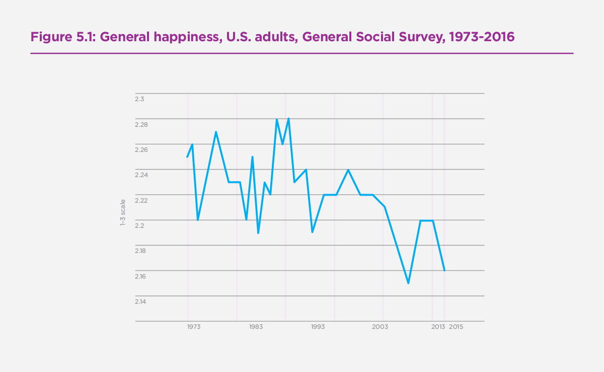

Dashboard graph designs will be spiced up by using color scales. For example, each continent will have its own color associated with it
wu.tianqi@wustl.edu
464490
julia.smith@wustl.edu
457271
jordans2299@gmail.com
465595
Our project will be centered around answering the questions of what happiness is, and more importantly how can we bring more of it to the world. While these may seem like simple and trivial questions, we think that there is a level of complexity when trying to maximize human happiness and this complexity is only magnified when trying to maximize happiness for large diverse groups. Furthermore, we are also interested in seeing what we should prioritize in our own life to reach maximum happiness. To examine happiness, we will be using the World Happiness report published annually by the United Nations since 2012. This report ranks all the countries by their happiness score which is based on numerous factors, such as GDP, life expectancy, freedom, and trust in government. To provide more context for this data, we will include additional data sets providing more details about each country for that specific year. From here you should be able to get a sense of what factors have the most significant impact on a particular country's happiness rank, and factors should we deem most important when evaluating a country’s well being.
With this visualization there are numerous questions we are trying to answer regarding the happiness in the world.
From asking answer these questions, we hope to get a better idea of what makes people happy, as well as how we can make society better overall.
Discovering this is important because the U.S. has lost a lot of smiles over the years, and most people haven't even realized it. As we can see from the graph below from the official World Happiness Report, U.S. happiness has declined from 2.26 to 2.16 from 1973 to 2013.
From a policy perspective, there is often a lot of focus on indicators like the GDP, stock market, and the overall unemployment rate.policy doesn't seem to always focus on overall human happiness because it may be seen as something "unquantifiable." With this project, we fundamentally set out to show that happiness is quantifiable and associated metrics can be used to make policy changes that ensure a more productive, happy, and healthy society. We hope to discover not just how well common economic indicators are correlated with happiness, but how other factors influence life as well.
Auxiliary economic data that is not included in the original dataset, e.g. GDP, government debt, and homelessness will have to come from outside our original datsets. Our data includes data about health, including overall physical health, access to healthcare, and healthcare outcomes. We also include environmental health and government corruption datasets in case we find interesting correlation in those datasets. These datasets are collected from reputable sources, such as the Gallup Poll, the World Health Organization, United Nations and the World Values Survey.
Most of our data is already available somewhere on the Internet in a table or JSON format, so we don't expect to do much data gathering in this regard. The only data we will have to process is the home size statistics from the UN and the world homeless statistics, as both don't make their tables public.
Most datasets already exist in a helpful table format with clear documentation and methodology, meaning that we may not need to do a lot of processing; however, we will have to clean some of the date range data to remove sections we don't need. This can be done through Python or even through manual deletion. We may not even have to combine data very much, as it even seems that most datasets we would like to use have already been combined with other datasets (at least in the case of the Our World in Data datasets). However, in order to make our vision work, we will definitely need to employ multiple sorting and filtering functions to create full functionality. This will be employed through Javascript.
With the vast amount of data we have to work with, it is difficult to say what quantities will be derived. In general, we will stick to raw quantities--e.g. quantities not adjusted by any sort of statistical normalization or manipulation. Our later original design features the following data quantities by country and continent: happiness, longevity, GDP per country, GDP per person, burden of disease, child mortality, mother mortality, homelessness, average home size, and feeling of freedom.
Dashboard graph designs will be spiced up by using color scales. For example, each continent will have its own color associated with it

Underneath this world map would be multiple sections that provide a graph on the right side of the web page and a brief explanation or analysis on the left side to provide more context or point out interesting things, making it far more reliant on text than Design 1, making the page more like a news article than a dashboard. Below is an example.

Sections of this design would include the following:
We chose Design 1 for our final visualization design for the following reasons:
We hope to have this project done by mid- to late- December. However, this final deadline may change.
| Monday of that Week | Julia's Assignment | Andy's Assignment | Jordan's Assignment |
|---|---|---|---|
| Nov. 16 | Proposal | Proposal | Proposal |
| Nov. 23--Iteration 1 | Prototype for Distribution of Happiness, Top Contributing Factor to Happiness, Longevity, Burden of Disease, Child Mortality, Updates | Prototype for Economic Outcomes, Maternal Mortality | Culture, Feeling, and Family |
| Nov.30 | Clickable map and attach click event to filtering, scrubbing graphs | Tooltips for data points or data bars, scrubbing for graphs | Filtering data by continent |
| Dec. 7--Iteration 2 | Color scale for happiness on map, clickable map, scrub other datasets, finish implementation, start overview | Color changing when clicking on data points/bars/whatever in chart, scrubbing | Color legend for graphs, statistical methods for overview, start on overview |
| Dec. 14 | Implementing country by-country filtering--extend to one country | Implement country-by-country filtering--extend to multiple countries | Implementing a search function/dropdown to select countries |
| Dec. 21 | Zoom on map, implement whatever charts found interesting | Transitions, whatever he's interested in | Tweaks user experience for flow and clarity, whatever he's interested in |
We received feedback from our professors that our original dashboard design didn't really answer our questions about common markers of happiness, what we could learn from the most happy countries, least happy countries, etc. We altered our design into a paginated one as the sketch below indicates. Instead of having a single dashboard, we have an overview, which will now include a statistical analysis of self-reported happiness contributors and the real correlation between different data metrics and happiness (overall). Under each statistical graph will be a text analysis explaining our methods and the correlation between our chosen factors and happiness--i.e. positive, negative, etc. We are hoping this statistical analysis page will reveal the most pertinent trends in happiness across the world. The "Explore" page has essentially unaltered functionality from the basic design, but graphs are now chosen from a drop-down-- they are not displayed at once. I haven't made a sketch for this, because I feel it doesn't deviate that much from the original. Finally, we have a page specially built for the 15 happiest and 15 least happiest countries that focuses special attention on the happiest and least happiest among us.
All data for our visualizations is ready to go inside CSV files. These particular CSV files are listed on the "Explore Our World" page that talks about what we are going to graph. The datasets will require some JS-side filtering, as they often include more data than we are graphing, but they are otherwise complete to the best data-gathering ability.
Something interesting to note in our initial data analysis was that suicide rates do not have a strong correlation with happiness. Is this due to a lack of mental-health data in less-developed countries, or are depressed people outliers from the happiness metric of the original population? An interesting analysis point that could be added to our overview in the future.
Implementation for now has been done using very simple methods. Like most other assignments, we have a main.js file as a controller, with object files as the inputs to the main.js implementation. Upon selecting a visualization from the breakdown, the createVis re-updates the given parent element with the new visualization object that has been selected. It all essentially follows the bog-standard pipeline well-known to studios.
Unfortunately, this means that a large amount of code is being reused, and certain data cleaning aspects may tank performance in the long run. This necessitates the creation of a new abstract scatterplot object by next iteration that can handle any dataset, destroying the need for multiple objects. If we can implement this, we can also explore the possibilities of other types of charts and additional data from our dataset, as we'll have to spend much less time implementing different scatterplots.
Proposal calendar changes to be adjusted on Tuesday, November 24, 2020, in light of difficulties with original design and implementation. Major code refactoring will become part of the proposal so that we may convert data ahead of time and create a "generic" and highly abstract scatterplot class that can be applied to both the base happiness data and any auxiliary data. This will help us to create more high-performing, reusable code. The team will also more greatly scrutinize design choices.
The overarching goal of an abstracted-out visualization class necessitated some serious consideration of our data-loading and filtering methods. In Milestone 1, we loaded multiple datasets and used JS array filtering methods to concatenate series of interest together within the individual visualization class. However, with so many planned data series in the visualization, this method of loading in different datasets and considering relevant series based on the individual visualization object was both computationally expensive and really coding-intensive.
To resolve this issue, we created one dataset using a combination of built-in Excel tools and the Python pandas library. Built-in Excel functions were used in initial data processing to filter for indicators of interest, rename columns if necessary, and get rid of extraneous columns. Python and the "Pandas" library was then used to merge data to the world-happiness-report-2015 dataset, which served as the overall project base (see exportHelper.py); it was also used to clean the dataset from extraneous countries or other other extraneous fields.
The results of this data cleaning and merging can now be found in new-data-cleaned.csv, which is the final result. Our Python cleaner is pretty extensible and can be used on other potential series.
As noted before, one of the major goals that was added at the end of Milestone 1 was abstracting out our visualizations such that one visualization class could be used to create any graph of a scatterplot nature. We managed to refactor our lifeExpectancy.js file into lineTemplate.js. Now, any future data series we try to add can simply be added onto the "mega" dataset and shipped into the template's "data" property.
The refactoring began with adding more object properties. In order to potentially graph many different things against happiness, we added an x-axis property that could be used to get the series of interest out of the mega-dataset. We also added an x-label property, because data series names are not always exactly the same as pertinent axis names. With refactoring to wrangleData(), these new object properties allowed us to a) graph different series at will, b) scale our axes and data plotting to different series at will, and c) change our axis names at will. This makes our plotting very flexible.
One thing we also realized when creating this abstracted-out line graph class was that changing our data points from strings to doubles could be somewhat resource intensive when being done multiple times. However, as noted above, the creation of a single dataset allowed us to implement our string-to-double filtering such that it only has to be done once.
We also added a region property, which has a purpose that will be expanded upon in the "Filtering by Continent and Value" section.
Filtering by continent and series of interest was completely refactored when lineTemplate.js was created. Before, when a selection change was registered, code in main.js took in the selection as a parameter and created the corresponding graph object. Obviously, this was pretty cumbersome, as if we had kept going with individual objects for each of our series, we would have had to create a pretty long switch case. With lineTemplate.js, any selection change is passed to the chart object, which then internally filters its display data. This structure allows us to implement changing region of interest and series of interest with very little code.
Some design changes were made in the implementation of explore/compare, especially in the datasets we used. For example, as noted before, there were no clear correlation between suicides and overall national happiness; we can assume that not only is suicide data often poorly kept or gathered due to stigma, police botching, etc., but also that people who commit suicide are happiness "outliers" when compared to the general population and their happiness level. Because of this issue, we removed suicide data from our visualization options. We are still thinking about what kind of data we would replace it with.
One other thing we changed is adjustments to our environmental plots. It turns out that a combined mortality rate for safe water and hygiene problems exists; this series captured the wider impact of poor municipal facilities, so it replaced the safe water alone metric. We also added electricity access to our considerations, as we believe electricity access will also inform other hygiene and disease metrics by reducing indoor smoke and air pollution, allowing more advanced medical facilities, and allowing greater public safety (to some extent).
For the overview section there are 5 different visualizations. The first one is a basic histogram that that shows the distribution of happiness scores for every country. The x-axis is the range of happiness scores and the y-axis is the frequency of the particular score. The histogram was made using the d3.histogram method to determine the appropriate bins for the visualization based on the happiness scores and the number of I put (which was 50). The next four visualizations are linear regression graphs for the four main factors we are comparing with happiness scores, these four are economic factors, Health, Environment, and Social Factors. These four graphs along with their discriptions underneath give insight into which factors have the greatest impact on a countries happiness. The visualizations are a simple scatter plot with a trend line attached. Using the least squares method the slope, y-intercept, and r-squared value were calcuated and the trend line was drawn using the slop and y-intercept to calcuate the appropriate x1,x2,y1, and y2 value.
In the first sketch aforementioned, we decide to implement tooltips and scrubbing at the same time. However, since both functionalities are trying to capture the movements of mouse(specifically, the event passed as function parameters), it's impossible to do both. Therefore, we have to consider tradeoffs while making the decision: (1) What features are mandatory for the design? (2) What actions would yield details more effectively, without messing the pages up? After weighing the strengths of both design, we decide to move forward with tooltips, since data classification with regions are already done with color scales. Moreover, tooltips are more flexible; instead of choosing an arbitary region, we can look at disconnected dots immediately with mouse movement.
When we evaluate the work for how we could have done the visualization better, we find it difficult to see how we could have used another graph to show the relationship between different aspects of this data. However, we have waffled back on forth on whether or not to have made the visualization more of an "article" with some limited interaction and more abstract plots. Doing this would have allowed us a more pedantic approach, that is, we could have dictated more interesting features or incidental correlations to our audience; our current implementation is far more open-ended in what the audience will notice. The audience in our current implementation will likely notice the general trend of happiness and our data; however, they may or may not notice clustering or other correlatory features of our data. Whether or not the audience would be interested in a more pedantic approach (rather than open-ended exploration) is something we will re-evaluate after peer feedback. This evaluation section will likely get a sequel in the future.
The peer review was helpful because it not only exposed the weaknesses of the visualization, but also confirmed some of the things we were thinking about our visualization. Obvious fixes--including adding legends, fixing some styling, and adding trendlines--were all things that we ended up implementing as part of our peer feedback. We also received less concrete feedback about the nature of the visualization. Some testers felt that the visualization lacked adequate "context" for its exploration; others felt that a more "storytelling" approach would be more helpful for such a deep and complex subject.
Our refinement of this visualization will likely not end at Iteration 2. We plan to add more obvious legends, more options for data filtering to allow users to explore the world to their heart's content, and text analysis on our overview/exploration to further explain what trends we see. We also think it would be fantastic if our data points had transitions that either caused them to move or fade in/fade out with changes to the series of interest.
We received a lot of feedback that suggested that we should take a more "sto"
Some design changes were made in the implementation of explore/compare, especially in the datasets we used. For example, as noted before, there were no clear correlation between suicides and overall national happiness; we can assume that not only is suicide data often poorly kept or gathered due to stigma, police botching, etc., but also that people who commit suicide are happiness "outliers" when compared to the general population and their happiness level. Because of this issue, we removed suicide data from our visualization options. We are still thinking about what kind of data we would replace it with.
One other thing we changed is adjustments to our environmental plots. It turns out that a combined mortality rate for safe water and hygiene problems exists; this series captured the wider impact of poor municipal facilities, so it replaced the safe water alone metric. We also added electricity access to our considerations, as we believe electricity access will also inform other hygiene and disease metrics by reducing indoor smoke and air pollution, allowing more advanced medical facilities, and allowing greater public safety (to some extent).
When we evaluate the work for how we could have done the visualization better, we find it difficult to see how we could have used another graph to show the relationship between different aspects of this data. However, we have waffled back on forth on whether or not to have made the visualization more of an "article" with some limited interaction and more abstract plots. Doing this would have allowed us a more pedantic approach, that is, we could have dictated more interesting features or incidental correlations to our audience; our current implementation is far more open-ended in what the audience will notice. The audience in our current implementation will likely notice the general trend of happiness and our data; however, they may or may not notice clustering or other correlatory features of our data. Whether or not the audience would be interested in a more pedantic approach (rather than open-ended exploration) is something we will re-evaluate after peer feedback. This evaluation section will likely get a sequel in the future.